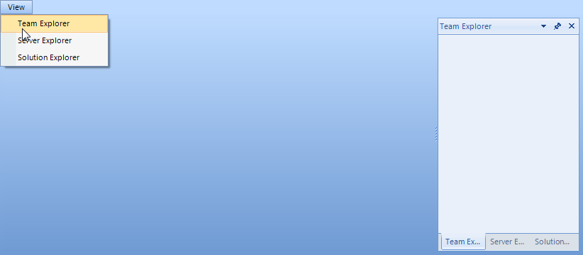

Creating ToolWindow and DocumentWindow at Runtime
Creating ToolWindow at Runtime
To create a new ToolWindow, construct a ToolWindow instance, set properties and call the RadDock DockWindow() method, passing a reference to the ToolWindow and a DockPosition enumeration value.
[C#] Creating a ToolWindow
ToolWindow windowTop = new ToolWindow();
windowTop.Text = "Window Top";
this.radDock1.DockWindow(windowTop, DockPosition.Top);
[VB.NET] Creating a ToolWindow
Dim windowTop As ToolWindow = New ToolWindow()
windowTop.Text = "Window Top"
Me.RadDock1.DockWindow(windowTop, DockPosition.Top)
Creating DocumentWindow at Runtime
To create a DocumentWindow, construct an instance of DocumentWindow, assign properties and call the RadDock Add____Document() method, passing the DocumentWindow instance.
[C#] Creating a DocumentWindow
DocumentWindow documentTop = new DocumentWindow();
documentTop.Text = "New Document";
this.radDock1.AddDocument(documentTop);
[VB.NET] Creating a DocumentWindow
Dim documentTop As DocumentWindow = New DocumentWindow()
documentTop.Text = "New Document"
Me.RadDock1.AddDocument(documentTop)
Example: Creating Multiple ToolWindow and DocumentWindow at Runtime
The following example creates multiple panels and document panes at runtime.
[C#] Creating ToolWindows and DocumentWindows
ToolWindow windowLeft = new ToolWindow();
windowLeft.Text = "Window Left";
this.radDock1.DockWindow(windowLeft, DockPosition.Left);
ToolWindow windowBottom = new ToolWindow();
windowBottom.Text = "Window Bottom";
this.radDock1.DockWindow(windowBottom, DockPosition.Bottom);
ToolWindow windowBottomRight = new ToolWindow();
windowBottomRight.Text = "Window Bottom Right";
this.radDock1.DockWindow(windowBottomRight, windowBottom, DockPosition.Right);
DocumentWindow document1 = new DocumentWindow();
document1.Text = "Document 1";
this.radDock1.AddDocument(document1);
DocumentWindow document2 = new DocumentWindow();
document2.Text = "Document 2";
this.radDock1.AddDocument(document2);
DocumentWindow document3 = new DocumentWindow();
document3.Text = "Document 3";
this.radDock1.AddDocument(document3);
[VB.NET] Creating ToolWindows and DocumentWindows
Dim windowLeft As ToolWindow = New ToolWindow()
windowLeft.Text = "Window Left"
Me.RadDock1.DockWindow(windowLeft, DockPosition.Top)
Dim windowBottom As ToolWindow = New ToolWindow()
windowBottom.Text = "Window Bottom"
Me.RadDock1.DockWindow(windowBottom, DockPosition.Bottom)
Dim windowBottomRight As ToolWindow = New ToolWindow()
windowBottomRight.Text = "Window Bottom Right"
Me.RadDock1.DockWindow(windowBottomRight, windowBottom, DockPosition.Right)
Dim document1 As DocumentWindow = New DocumentWindow()
document1.Text = "Document 1"
Me.RadDock1.AddDocument(document1)
Dim document2 As DocumentWindow = New DocumentWindow()
document2.Text = "Document 2"
Me.RadDock1.AddDocument(document2)
Dim document3 As DocumentWindow = New DocumentWindow()
document3.Text = "Document 3"
Me.RadDock1.AddDocument(document3)
Creating and docking multiple windows in a single strip
There are cases in which you might prefer docking two or more windows to the right edge of RadDock only, so that these right-edged windows are tabbed in a single container.
For example, let’s say that we have Team Explorer, Solution Explorer and Server Explorer windows and they are all initially closed. We also have a menu that allows us to open these windows, and after clicking all the corresponding menu items we want to get this picture:

At first, let’s try a solution that seems to be the easiest one:
[C#]
private void menuItemTeamExplorer_Click1(object sender, EventArgs e)
{
TeamExplorerUserControl teuc = new TeamExplorerUserControl();
DockPosition dockTo = DockPosition.Right;
HostWindow hw = this.radDock1.DockControl(teuc, dockTo);
hw.Text = "Team Explorer";
}
private void menuItemServerExplorer_Click1(object sender, EventArgs e)
{
ServerExplorerUserControl seuc = new ServerExplorerUserControl();
DockPosition dockTo = DockPosition.Right;
HostWindow hw = this.radDock1.DockControl(seuc, dockTo);
hw.Text = "Server Explorer";
}
private void menuItemSolutionExplorer_Click1(object sender, EventArgs e)
{
SolutionExplorerUserControl seuc = new SolutionExplorerUserControl();
DockPosition dockTo = DockPosition.Right;
HostWindow hw = this.radDock1.DockControl(seuc, dockTo);
hw.Text = "Solution Explorer";
}
[VB.NET]
Private Sub menuItemTeamExplorer_Click1(ByVal sender As Object, ByVal e As EventArgs)
Dim teuc As New TeamExplorerUserControl()
Dim dockTo As DockPosition = DockPosition.Right
Dim hw As HostWindow = Me.RadDock1.DockControl(teuc, dockTo)
hw.Text = "Team Explorer"
End Sub
Private Sub menuItemServerExplorer_Click1(ByVal sender As Object, ByVal e As EventArgs)
Dim seuc As New ServerExplorerUserControl()
Dim dockTo As DockPosition = DockPosition.Right
Dim hw As HostWindow = Me.RadDock1.DockControl(seuc, dockTo)
hw.Text = "Server Explorer"
End Sub
Private Sub menuItemSolutionExplorer_Click1(ByVal sender As Object, ByVal e As EventArgs)
Dim seuc As New SolutionExplorerUserControl()
Dim dockTo As DockPosition = DockPosition.Right
Dim hw As HostWindow = Me.RadDock1.DockControl(seuc, dockTo)
hw.Text = "Solution Explorer"
End Sub
However, this API makes RadDock dock the window to right of RadDock itself, not taking into consideration other right-docked windows:

So, we need to follow another approach. What we need to do is to globally define a ToolTabStrip variable that would be set the first time a window is right-docked. Then, the next time we dock a window, we will do it in the context of the already created ToolTabStrip. Here is what should be done in code on click of the menu items:
[C#]
ToolTabStrip rightHandStrip = null;
private void menuItemTeamExplorer_Click(object sender, EventArgs e)
{
TeamExplorerUserControl teuc = new TeamExplorerUserControl();
ToolWindow teucW = new ToolWindow();
teucW.Controls.Add(teuc);
teucW.Text = "Team Explorer";
if (rightHandStrip == null)
{
this.radDock1.DockWindow(teucW, DockPosition.Right);
rightHandStrip = (ToolTabStrip)teucW.Parent;
}
else
{
this.radDock1.DockWindow(teucW, rightHandStrip, DockPosition.Fill);
}
}
private void menuItemServerExplorer_Click(object sender, EventArgs e)
{
ServerExplorerUserControl seuc = new ServerExplorerUserControl();
ToolWindow seucW = new ToolWindow();
seucW.Controls.Add(seuc);
seucW.Text = "Server Explorer";
if (rightHandStrip == null)
{
this.radDock1.DockWindow(seucW, DockPosition.Right);
rightHandStrip = (ToolTabStrip)seucW.Parent;
}
else
{
this.radDock1.DockWindow(seucW, rightHandStrip, DockPosition.Fill);
}
}
private void menuItemSolutionExplorer_Click(object sender, EventArgs e)
{
SolutionExplorerUserControl seuc = new SolutionExplorerUserControl();
ToolWindow seucW = new ToolWindow();
seucW.Controls.Add(seuc);
seucW.Text = "Solution Explorer";
if (rightHandStrip == null)
{
this.radDock1.DockWindow(seucW, DockPosition.Right);
rightHandStrip = (ToolTabStrip)seucW.Parent;
}
else
{
this.radDock1.DockWindow(seucW, rightHandStrip, DockPosition.Fill);
}
}
[VB.NET]
Private rightHandStrip As ToolTabStrip = Nothing
Private Sub menuItemTeamExplorer_Click(ByVal sender As Object, ByVal e As EventArgs)
Dim teuc As New TeamExplorerUserControl()
Dim teucW As New ToolWindow()
teucW.Controls.Add(teuc)
teucW.Text = "Team Explorer"
If rightHandStrip Is Nothing Then
Me.RadDock1.DockWindow(teucW, DockPosition.Right)
rightHandStrip = CType(teucW.Parent, ToolTabStrip)
Else
Me.RadDock1.DockWindow(teucW, rightHandStrip, DockPosition.Fill)
End If
End Sub
Private Sub menuItemServerExplorer_Click(ByVal sender As Object, ByVal e As EventArgs)
Dim seuc As New ServerExplorerUserControl()
Dim seucW As New ToolWindow()
seucW.Controls.Add(seuc)
seucW.Text = "Server Explorer"
If rightHandStrip Is Nothing Then
Me.RadDock1.DockWindow(seucW, DockPosition.Right)
rightHandStrip = CType(seucW.Parent, ToolTabStrip)
Else
Me.RadDock1.DockWindow(seucW, rightHandStrip, DockPosition.Fill)
End If
End Sub
Private Sub menuItemSolutionExplorer_Click(ByVal sender As Object, ByVal e As EventArgs)
Dim seuc As New SolutionExplorerUserControl()
Dim seucW As New ToolWindow()
seucW.Controls.Add(seuc)
seucW.Text = "Solution Explorer"
If rightHandStrip Is Nothing Then
Me.RadDock1.DockWindow(seucW, DockPosition.Right)
rightHandStrip = CType(seucW.Parent, ToolTabStrip)
Else
Me.RadDock1.DockWindow(seucW, rightHandStrip, DockPosition.Fill)
End If
End Sub
'#End Region
'#region wrongApproach
Private Sub menuItemTeamExplorer_Click1(ByVal sender As Object, ByVal e As EventArgs)
Dim teuc As New TeamExplorerUserControl()
Dim dockTo As DockPosition = DockPosition.Right
Dim hw As HostWindow = Me.RadDock1.DockControl(teuc, dockTo)
hw.Text = "Team Explorer"
End Sub
Private Sub menuItemServerExplorer_Click1(ByVal sender As Object, ByVal e As EventArgs)
Dim seuc As New ServerExplorerUserControl()
Dim dockTo As DockPosition = DockPosition.Right
Dim hw As HostWindow = Me.RadDock1.DockControl(seuc, dockTo)
hw.Text = "Server Explorer"
End Sub
Private Sub menuItemSolutionExplorer_Click1(ByVal sender As Object, ByVal e As EventArgs)
Dim seuc As New SolutionExplorerUserControl()
Dim dockTo As DockPosition = DockPosition.Right
Dim hw As HostWindow = Me.RadDock1.DockControl(seuc, dockTo)
hw.Text = "Solution Explorer"
End Sub